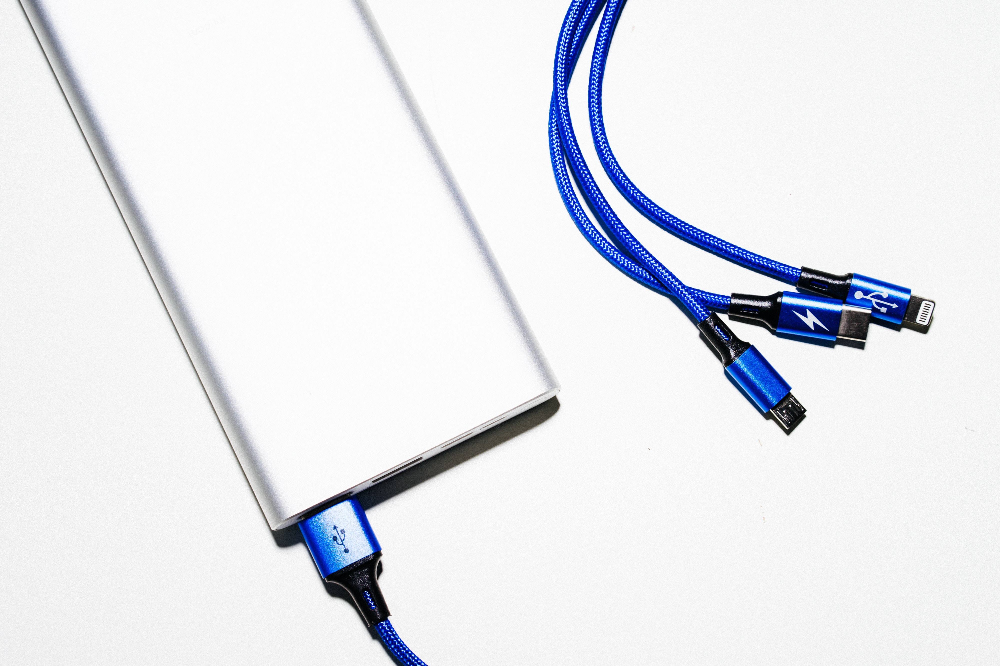

- HTML
- CSS
- Javascript
- egoing
- k8805
- youbin
HTML>
Hepertext Markup Language(HTML) is the standard markup language for creating web pages and web applications.
지난 6월 29일부터 방영되기 시작한 수목드라마 ‘이상한 변호사 우영우(우영우)’가 인기입니다. 우영우는 채널 ENA와 OTT(온라인동영상서비스) 넷플릭스·시즌 등을 통해 방영되고 있는데요.
우영우와 함께 주목받은 건 채널 ENA입니다. ENA는 ‘스카이라이프티브이(스카이TV)’에서 운영하는 종합 드라마·오락 채널인데요. KT그룹 계열사입니다.